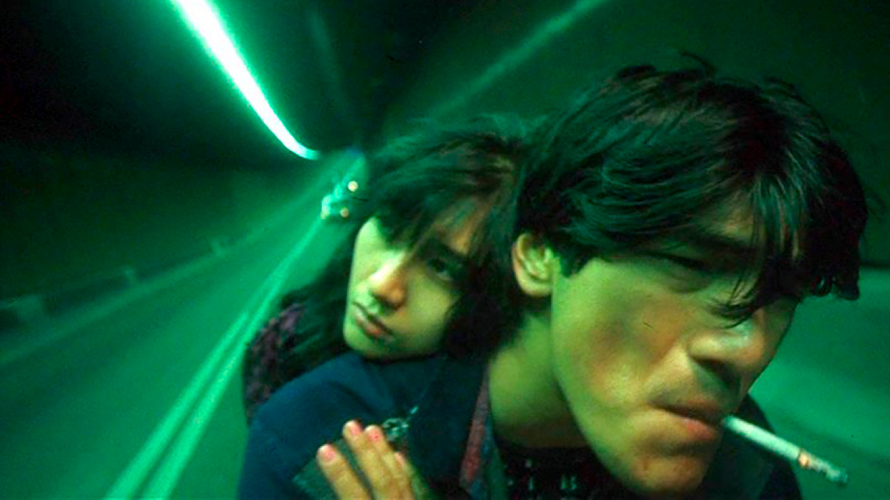
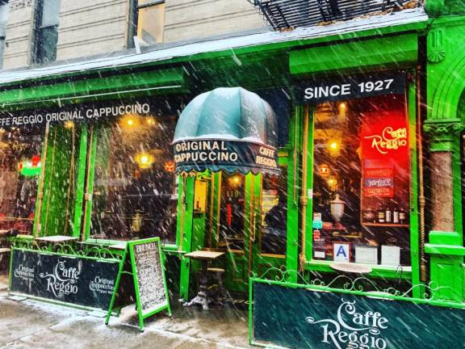
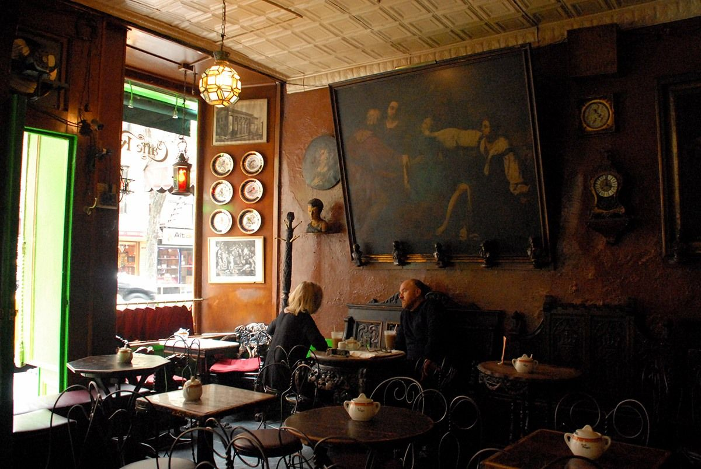
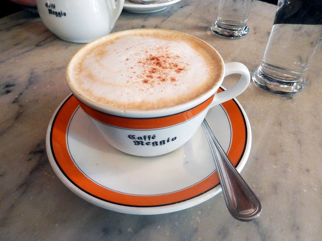
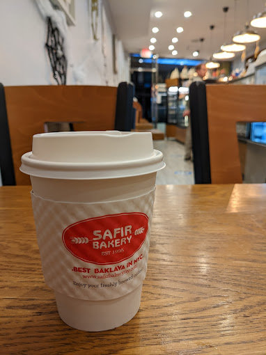

November 2nd, 2023 — Josh
A few months back, I gave a talk at a *BSD User Group meetup which I titled "Down With the Corporate Ethos, Up With the Sunrise: Inspiring a New Generation of Hackers". In the talk I tried to paint a monster and advocate for its replacement -- the beaurocratic, vain, bloated, entitled, greedy, corporate, pointless, delusional, tired, frustrating, bumbling mass that is the computing industry, and how devoid it is of life. Life is not like that. In life we have sunrises, autumn leaves, a stream with bright fish, and rosy cheeks. This essential romanticism is missing completely from our practice as computer scientists and programmers. [1]
The below quote has always resonated with me:
If you want to build a ship, don't drum up the men to gather wood, divide the work and give orders. Instead, teach them to yearn for the vast and endless sea.
As time passes I come to understand and value this notion more. My love of seasons; the idea that there are some things which can not be communicated directly, they must be evoked or danced around if you want to communicate the full richness; poetry; myths; the idea of revelation, something completely separate from the realm of reason; paintings; smells; that one memory that keeps your heart beating.
I was completely steeping myself in this way of thinking in the weeks before I gave the talk, exactly how I used to steep myself in piles of study material before exams at school. In school I was scared that I would let go and forget everything, so I kept studying. Before the talk I was scared that I would become depressed, it's cyclical.
But this brings me to cappuccinos, somehow the harbringer of this way of thinking for me.
A few years ago I watched the movie "Chungking Express" by Wong Kar-wai at night in the middle of Greenwich Village, after which me and my girlfriend stumbled upon a place called Caffè Reggio. We reflected on the movie, and I had a cappuccino with a chocolate croissant. I don't know why this was such a profound moment for me, but I felt really alive.
Not too longer after that I came across the painting "Nighthawks" by Edward Hopper, and I was ecstatic. That's literally me, I am the nighthawk, this is so real! I kept bringing it up to all of my friends for the next few weeks because I was happy to have finally resonated with a painting, but it turns out that this is a very popular painting that everyone already knew about so I couldn't get across the synchronicity that I'd experienced lol.
I've mostly gotten over my random fetish for cappuccinos now (I will just take a coffee [2]), but it remains a symbol for me, and I've learned to appreciate the power of a pleasant memory. That's what keeps life moving forward, your heart beating.
And so, I wanted to dedicate the rest of this post to three cappuccinos I love.
Allegedly home to America's first cappuccino. Apparently Allen Ginsberg and Jack Kerouac used to hang out here.
They also have a bench that belonged to the Medici family in Italy... you can sit on it and have your coffee.
Their cappuccino is delicious :), and I always get a Nutella croissant
IFC center nearby often screens older movies (actually good ones, not Pet Sematary).
This is a nice little Turkish bakery with really delicious baklava. I do not want to eat baklava ever again though after the amount I ate here lol. One day I was fortunate enough to try a cappuccino from them, and I was really surprised at how good it tastes.
"When I visited Italy for the first time recently, I had a cappuccino at a cafe (or as they say...bar) in Florence and it tasted virtually identical to the one I had back home at this bakery, which really caught me off guard. I think that is a huge compliment to the bakery haha.
This is the cappuccino which I like with NO SUAGR (well, usually I ask for "just a little"). It just tastes really good as is; I somehow find myself even getting a little upset when it turns out being noticeably sweet.
This is a bit of a random pick for me. I think Prince Tea House is technically a chain, and their dessert is pretty mehhhh, and yet I still really like their cappuccino, enough to include it here.
It doesn't usually look like this lol this is just a cool photo of theirs I found online, but it's one of those "latte art" coffee drinks, rather than just the old school foamed milk on top. It's cloyingly sweet, and it's damn delicious.
Most importantly, I always get it with french fries........
I would be remiss if I didn't mention the mythical Soccer Tavern, where my friend Brigid's dad works. I love that place. Having a Guinness there holds the very same mystical property for me.
If you ever visit one of these places, I'd be super happy if you emailed me a let me know how it went haha. I don't think these are objectively the best cappuccinos or anything like that, they are just places where I made memories, and that's why I like them. If you want to go together and hang out let me know, maybe that could be fun...!
[1] I really care about this, I refuse to resign to being an automaton until I'm off the clock. Laboring is in our nature and an essential part of our being, and there is so much left to fix in our planet and our societies. Why are we all wasting our time? Why are we so unhappy? I am still entranced by the nature of computing and the nascent field of programming, yet somehow we have made using a computer the antithesis of living -- hunched indoors alone with pained eyeballs screaming into the hatebox. Although I feel stupid saying it, I was excited by Apple's Vision Pro, finally computing in the deep woods.
[2] Not to say that I've given up my nature as a nighthawk, nothing beats a cup of coffee at night in the right circumstances